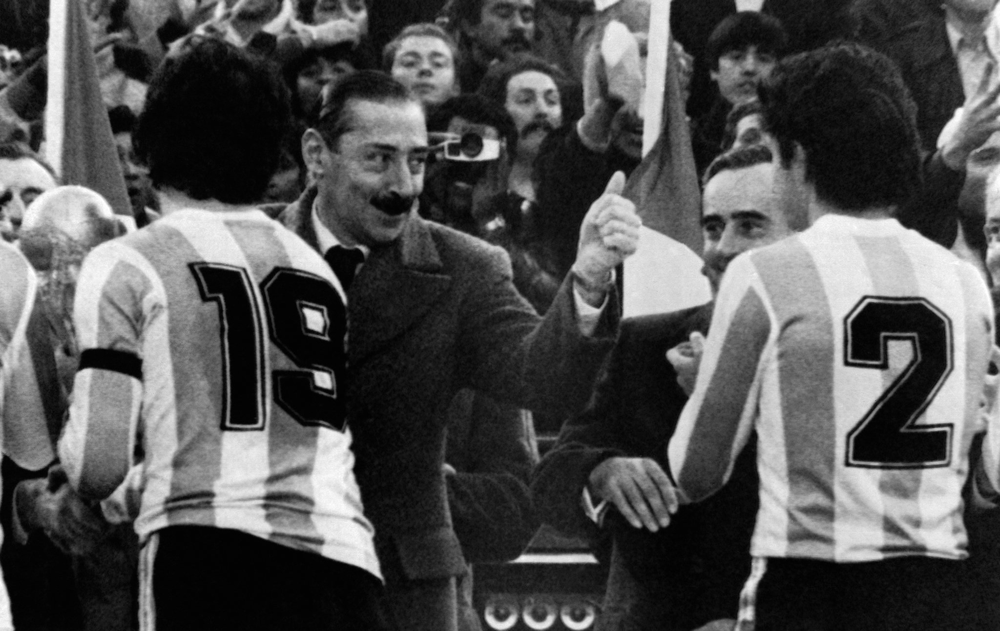

Hechos Históricos
- El Maracanazo (1950)
- El Milagro de Berna (1954)
- El Gol Fantasma (1966)
- Polémicas de Dictaduras (1934 y 1978)
- La Mano de Dios y el Gol del Siglo (1986)
- El cabezazo de Zidane (2006)


.webp)


Sedes del Mundial |
|||||
|---|---|---|---|---|---|
| Año | Sede | Campeón | Subcampeón | Tercer Puesto | Formato de Equipos (Fases) |
| 1930 |  URUGUAY URUGUAY |
🏆 Uruguay | 🏆 Argentina |
 EE. UU. / EE. UU. /
 Yugoslavia Yugoslavia
|
13 equipos. Grupos y Semifinales directas. |
| 1934 |  ITALIA ITALIA |
🏆 Italia | 🏆 Checoslovaquia |  Alemania Alemania |
16 equipos. Eliminación directa. |
| 1938 |  FRANCIA FRANCIA |
🏆 Italia | 🏆 Hungría |  Brasil Brasil |
15 equipos. Eliminación directa. |
| 1950 | BRASIL |
🏆 Uruguay | 🏆 Brasil |  Suecia Suecia |
13 equipos. Cuadrangular Final. |
| 1954 |  SUIZA SUIZA |
🏆 Alemania | 🏆 Hungría |  Austria Austria |
16 equipos. Cuartos de final. |
| 1978 |  ARGENTINA ARGENTINA |
🏆 Argentina | 🏆 Países Bajos | Brasil |
16 equipos. Dos fases de grupos. |
| 1982 |  ESPAÑA ESPAÑA |
🏆 Italia | 🏆 Alemania |  Polonia Polonia |
24 equipos. Segunda fase y Final. |
| 1994 | ESTADOS UNIDOS |
🏆 Brasil | 🏆 Italia | Suecia |
24 equipos. Octavos de final. |
| 2010 |  SUDÁFRICA SUDÁFRICA |
🏆 España | 🏆 Países Bajos | Alemania |
32 equipos. Octavos de final. |
| 2018 |  RUSIA RUSIA |
🏆 Francia | 🏆 Croacia |  Bélgica Bélgica |
32 equipos. Octavos de final. |
| 2022 |  QATAR QATAR |
🏆 Argentina | 🏆 Francia |  Croacia Croacia |
32 equipos. Octavos de final. |
| 2026 |
 MÉXICO EE. UU. MÉXICO EE. UU. CANADÁ CANADÁ
|
🏆 Argentina | 🏆 Francia |  Marruecos Marruecos |
48 equipos. 12 grupos de 4. |